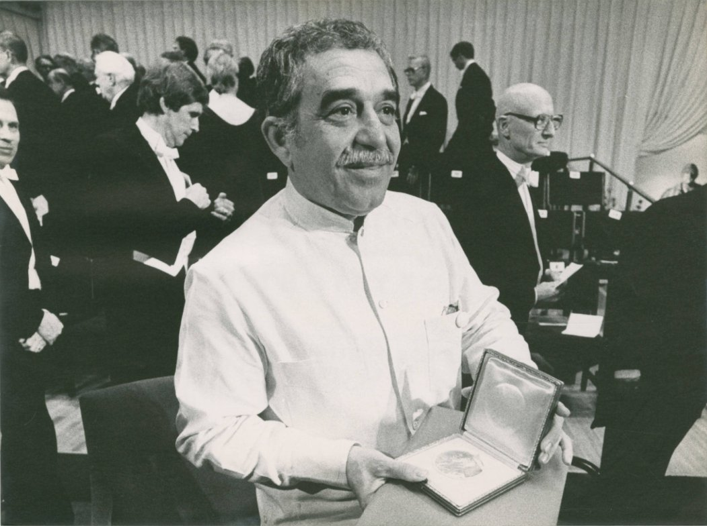

Nobel De Literatura (1982)
En 1982 el escritor colombiano Gabriel García Márquez recibió el Nobel de Literatura “por sus novelas e historias cortas, en las que lo fantástico y lo real se combinan en un mundo ricamente compuesto de imaginación, lo que refleja la vida y los conflictos de un continente”.
El Gran Diario de México dio a conocer los pormenores de la entrega, desde las especulaciones, Mario Vargas Llosa y Octavio Paz figuraban entre los posibles ganadores de los 16 mil dólares que el premio entregaría en aquél entonces, hasta el discurso que declamó el autor de “Cien años de soledad” en la Academia Sueca, abordó temas como la pobreza, las violaciones a los derechos humanos y los problemas de desarrollo de Latinoamérica. Fue aplaudido durante varios minutos.
Días antes de viajar a Estocolmo para recibir la presea, EL UNIVERSAL conversó con “Gabo”, quien comentó que el dinero que recibiría se destinaría íntegramente para establecer un periódico en su natal Colombia y que no se presentaría a la ceremonia de frac, sino con guayabera o mezclilla.
https://www.eluniversal.com.mx/cultura/cuando-gabriel-garcia-marquez-recibio-el-nobel-de-literatura